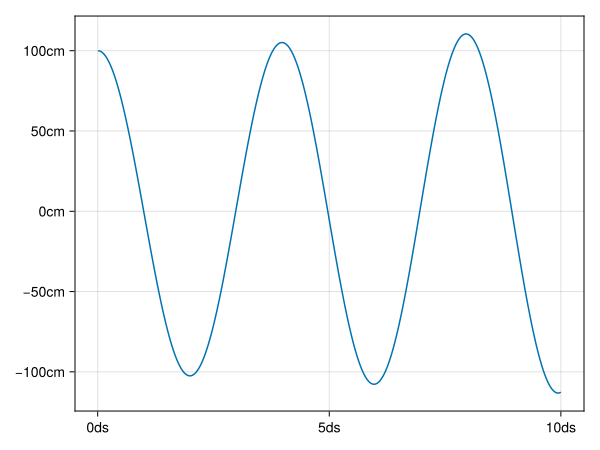

Example
It cannot be helped that this example will seem a bit contrived.
We're modelling the movement of a spring. It can be useful to put some common definitions in a separate module.
#| file: examples/spring.jl
using ModuleMixins
using CairoMakie
using Unitful
module Common
abstract type AbstractInput end
abstract type AbstractState end
function initial_state(input::AbstractInput)
error("Can't construct from AbstractInput")
end
export AbstractInput, AbstractState, initial_state
end
<<example-time>>
<<example-spring>>
<<example-run>>The model has input parameters and a mutable state. We'll have a time component:
#| id: example-time
@compose module Time
using Unitful
using ..Common
@kwdef struct Input <: AbstractInput
t_step::typeof(1.0u"s")
t_end::typeof(1.0u"s")
end
mutable struct State <: AbstractState
time::typeof(1.0u"s")
end
function step!(input::AbstractInput, state::AbstractState)
state.time += input.t_step
end
function run(model, input::AbstractInput)
s = model.initial_state(input)
Channel() do ch
while s.time < input.t_end
model.step!(input, s)
put!(ch, deepcopy(s))
end
end
end
endNote that the run function is generic. And a component for the spring.
#| id: example-spring
@compose module Spring
@mixin Time
using ..Common
using Unitful
@kwdef struct Input <: AbstractInput
spring_constant::typeof(1.0u"s^-2")
initial_position::typeof(1.0u"m")
end
mutable struct State <: AbstractState
position::typeof(1.0u"m")
velocity::typeof(1.0u"m/s")
end
function step!(input::AbstractInput, state::AbstractState)
delta_v = -input.spring_constant * state.position
state.position += state.velocity * input.t_step
state.velocity += delta_v * input.t_step
end
endNow we may compose these using @mixin:
#| id: example-run
@compose module Model
@mixin Time, Spring
using ..Common
using Unitful
function step!(input::Input, state::State)
Spring.step!(input, state)
Time.step!(input, state)
end
function initial_state(input::Input)
return State(0.0u"s", input.initial_position, 0.0u"m/s")
end
endAnd see the result.
#| id: example-run
function plot_result()
input = Model.Input(
t_step = 0.001u"s",
t_end = 1.0u"s",
spring_constant = 250.0u"s^-2",
initial_position = 1.0u"m",
)
output = Time.run(Model, input) |> collect
times = [f.time for f in output]
pos = [f.position for f in output]
fig = Figure()
ax = Axis(fig[1, 1])
lines!(ax, times, pos)
save("docs/src/fig/plot.svg", fig)
end
plot_result()